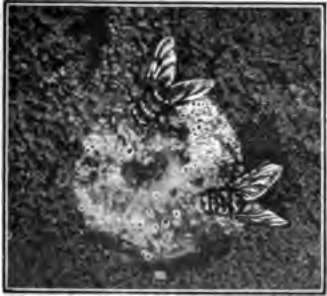

How To Keep Well. Part 2
Description
This section is from the book "The Human Body And Health", by Alvin Davison. Also available from Amazon: The Human Body and Health.
How To Keep Well. Part 2
Fig. 143. The young of mosquitoes called wigglers, living in stagnant water. From a photograph.
Fig. 144. Flies at a feast. The germs in this spit will be carried by the insects to milk and other food which they seek later.
The use of boiled drinking water in Philadelphia, Cincinnati, Cleveland, Louisville, Memphis, New Orleans, St. Louis and Washington during the years 1900-1904 would have prevented 50,000 cases of typhoid fever. The use of boiled water in Pittsburg during the same five years would have prevented 10,000 cases of fever in that city.
The germs of malaria and yellow fever are easily kept out of the system by preventing the two kinds of mosquitoes carrying them from biting. As the young of these insects live only in quiet pools of water, with no fish, their numbers may be much lessened by draining the puddles and pouring out the water in tubs and old cans. Where this cannot be done, the young may be killed by kerosene poured on the water, using one pint for every hundred square feet of surface (Fig. 143).
The terrible bubonic plague or black death, is conveyed to man by the bite of a flea or bug, living on rats and man.
Fig. 145. A dish of pure meat jelly over which a fly walked. Each white spot shows where a germ was scraped off its feet and grew two days later into millions.
Leprosy may also be caught by the bite of bed bugs or fleas.
Why Some Germs Cannot Be Kept Out Of The Body
When near patients with scarlet fever, smallpox, grippe, measles, mumps and chicken pox, there is no way of shutting the germs out of the system, because they become mingled with the air. The germs of diphtheria and tuberculosis are also likely to mingle with the air, unless the patients use great care. The secretions of the mouth and nose should always be received into a cloth, or special pasteboard cup, and burned, and a cloth, to be later burned, should be held over the mouth while coughing. In quiet breathing no germs of any kind are given off.
How Germs Are Removed From Water
Many cities getting their water from streams likely to contain disease germs, pass the water through a layer of sand and coarse gravel. This is called a filter. The passing of water through it is filtration. The filter keeps back over nine tenths of the germs and they soon die. The small house filters are also useful, but they should bo cleaned daily and boiled weekly.
Fig. 146. A filter to strain out the germs at the house tap. Such a filter must be cleaned and boiled weekly.
Since the city sand filter has been in use at Albany, New York, only one fourth as many deaths occur yearly from typhoid fever as previously, and there have been less than half as many deaths from diarrheal diseases as formerly. At Lawrence, Massachusetts, only one fourth as many cases of typhoid fever occur yearly as before the water was filtered.
How The Body Tissues Kill Germs
There is no doubt that disease germs get into the mouth and nose every day. The bacteria causing sore throat and pneumonia have been frequently found in the mouth and* throat of healthy people. These germs are most likely to bring on disease, only when one becomes chilled, so that the body cells are weakened and permit the intruders to get a start.
In health, the nasal mucus, gastric juice and blood are able to destroy vast numbers of bacteria. Certain other agents in the blood weaken bacteria gaining entrance, so that they are easily devoured by the white blood corpuscles.
Alcohol Is The Foe Of Health
The following paragraphs are copied from large cards hung by the government authorities of Paris, in public waiting rooms, in order to check the waste of health caused by drinking wine, brandy and other liquors: "Alcoholism is chronic poisoning resulting from the habitual use of alcohol, even when this is not taken in amounts sufficient to produce drunkenness".
"The habit of drinking leads to the neglect of family, to forgetfulness of all social duties, to distaste for work, to want, theft, and crime. It leads, at the very least, to the hospital for alcoholism causes a great variety of diseases, many of them most deadly: paralysis, insanity, disorders of the stomach and liver, dropsy; it is one of the frequent causes of consumption. Finally it complicates and renders more serious every acute illness; as typhoid fever, pneumonia, or erysipelas, which would be mild in a sober individual, will rapidly kill the alcoholic".
How The Body Becomes Safe From Some Diseases
Safety from some diseases depends upon the germ-killing power of the blood. This power against some germs, such as those of tuberculosis, may be developed by using good food, taking plenty of sleep, an abundance of fresh air and regular exercise. The germ-killing power of the blood against the germs of such diseases as diphtheria, smallpox, lockjaw and hydrophobia may be developed by the use of antitoxin or by vaccination.
Tuberculosis
The tiny plants causing this sickness are so abundant everywhere that it is impossible for those living in towns and cities to keep them out of the body. More than half of the people over 25 years of age have, at some time, had growing in their tissues the parasites causing tuberculosis. The fact that 400 people are dying daily in the United States, from this disease, and that one third of all deaths occurring between the ages of 15 and 45 years result from tuberculosis, shows the need of trying to render the body safe from disease.
Continue to: